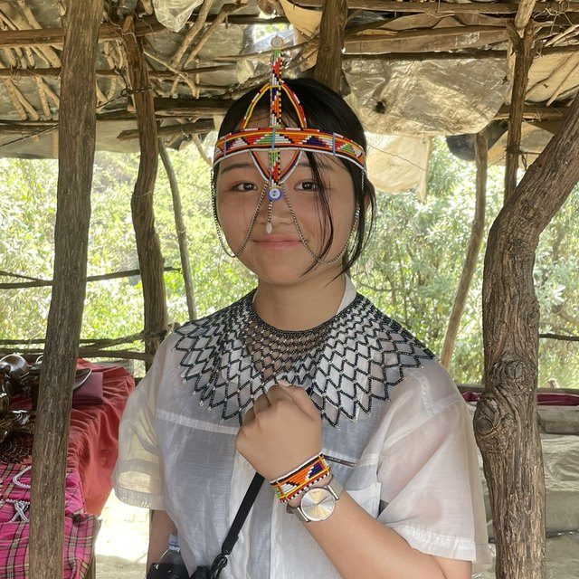

相互交流
アフリカ全域の東京大学同窓生の相互交流と支援を促進します。
Africa Akamonkai
東京大学アフリカ同窓会 ─ 赤門会
東京大学とアフリカ全域の同窓生・在学生・研究者をつなぎ、相互支援と協働を後押しするネットワークです。
About
アフリカ出身の東京大学同窓生はアフリカ全域に広がっていますが、組織的なネットワークはまだ十分に整備されていません。アフリカ赤門会は、国ごとではなくアフリカ大陸全体をひとつのコミュニティとして、同窓生、在学生、若手研究者をつなぐことを目指しています。
Mission
アフリカ全域の東京大学同窓生の相互交流と支援を促進します。
在学生と若手研究者を支援します。
学術、ビジネス、社会分野で日本とアフリカの架け橋となります。
アフリカにおける東京大学の研究・教育活動の可視性を高めます。
同窓会コミュニティ内のイノベーションと起業家精神を育みます。
Activities
同窓生データベース、定期交流、オンラインでの情報共有。
在学生へのサポート、メンタリング、奨学金・研究機会の情報共有。
研究協力、ビジネスマッチング、起業支援、招聘講師・訪問研究者の支援。
年次報告、ニュースレター、SNSでの情報発信。
Members

会長・創設メンバー
東京大学 システム創成学科 環境・エネルギーシステムコース 4年
在学中に2年間休学し、タンザニアのコーヒー農園、ケニアの現地エンジニアリングコンサル会社、ナイジェリアのサンダル工場スタートアップでインターン。将来はサブサハラ・アフリカの原子力発電に携わりたい、という野望を持っています。
事務局長・創設メンバー
株式会社ProofAir 代表取締役社長／東京大学大学院 環境システム学専攻
株式会社ProofAirを立ち上げ、アフリカの工場の環境対策と経済成長を両立させるサービスを提供しています。まずはケニアの紅茶工場から始め、アフリカのすべての工場に環境マネジメントAIを導入することが目標です。アフリカを知るきっかけは、ルワンダ虐殺の手記を読んだことでした。
創設メンバー
創設メンバー
News
本郷キャンパス法文1号館214教室で、ケニアの紅茶とナイジェリアのチョコレートを囲み、東大とアフリカをつなぐ活動の紹介やスワヒリ語クイズを楽しんでいただきました。
Contact
お問い合わせは LinkedIn からのご連絡を推奨しています。
Email: africa.akamon@gmail.com
LinkedIn: linkedin.com/company/utokyo-africa
Facebook: To be updated.